[论文笔记] Bounding Box Regression with Uncertainty for Accurate Object Detection
背景：NMS与Soft-NMS
NMS
Non-Maximum Suppression（非极大值抑制），一般特指的是在目标任务里面，最后（对于RCNN系列模型，由RPN模块）会产生很多的候选bbox，但是bbox之间可能出现大部分相互交叉的情况，IoU值较高，而且可能对应的是同一个gt。这个时候就需要用NMS来选取各个邻域内分数较高的bbox作为预测，同时抑制分数较低的bbox。
标准NMS的过程比较粗暴：记候选框集合为，预测结果集合为，置信度（一般对应的是分类的score），IoU阈值为
- 选取，记为候选框
- 从中去掉，将其加入
- 将中与的IoU大于阈值的框移除
- 重复1-3，直到清空
Soft-NMS
这样做带来的一个显然的缺点就是当gt的两个框本身重合度就大于阈值的时候（比如人群之类的场景），肯定会有一个被删掉；Soft-NMS就是面对这个问题提出的，它会选择按照IoU的大小降低框的分数/置信度，从而在抑制的前提下令IoU高的候选框还有被选中的可能。
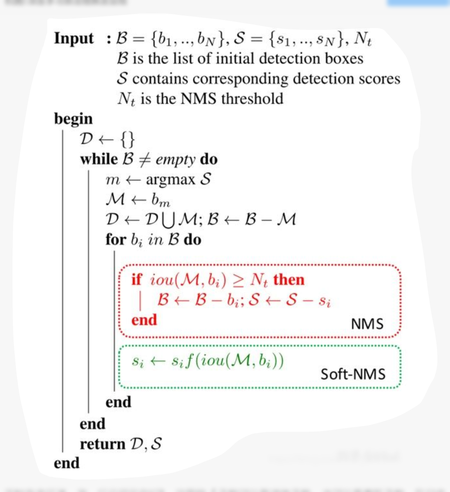
$f$的选取可以用（截断的）线性函数或者是高斯函数。
Introduction
本文首先是由一个ground truth bounding box的ambiguity问题引出的，作者发现有的情况下由于物体的部分遮挡，有的gt bbox是不明确的，可能只是把物体出现的那一部分框出来。
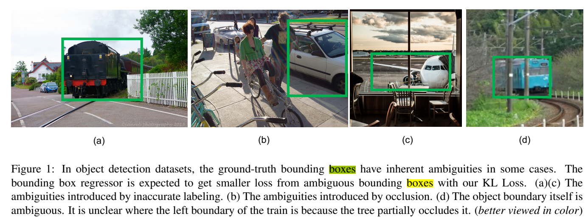
更具体而言，如果体现在预测中，classification score更高的框不一定更加精准（比如说目标的主体如果占了这个框的大部分可能分类置信度较高，但是真正包含整个目标的框反而可能分类置信度更低，所以nms中单凭分类置信度来选候选框是考虑不到这一点的）；如下图这种情况：
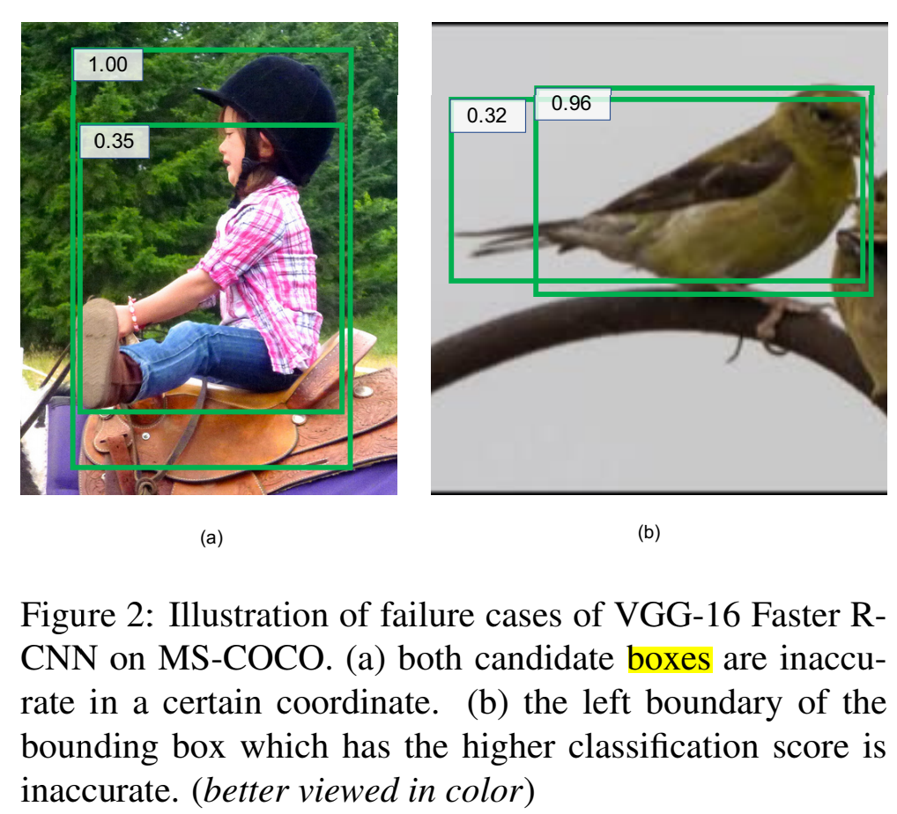
作者认为一般的bbox回归所用的loss未能考虑到这样的不确定性，于是在假定候选框分布为高斯分布，gt bbox分布Dirac delta分布，设计了KL-loss来最小化两个分布间的KL divergence；再次基础上提出了var-voting（旧版也称softer-nms）来在nms过程中，调整候选框的坐标。
Probability distribution of bbox location
之前提到的候选框和gt bbox的分布更具体的意义其实是对于其相对anchor box的offset而言的。用来表示候选框坐标，用来表示gt框坐标，来表示anchor坐标；那么对应的相对offset为：
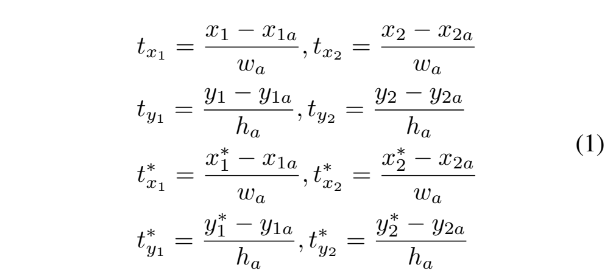
然后来到了这篇文章的一个核心思想：这个网络预测的不只是bbox的位置，而是一个bbox位置的概率分布（与置信度相关）；作者假设坐标相互独立，是一个单元高斯分布；我们用来表示这样的offset所对应的框的坐标，其概率分布可以表示为：
其中表示可学习的参数，是最终估计的bbox位置。越小，对应的置信程度越高，这个参数应当由fast R-CNN head(fc7)产生。
相应地，gt bbox也能够被表示为一个高斯分布；令，可以写成一个Dirac delta函数：
KL Loss
确定了预测的任务之后，作者进一步规定了目标：最小化的KL散度，即：
定义损失函数为，展开后可得：
因为对微分后有分母中含的项，为了避免梯度爆炸，选用替代，在测试时则仍然使用：
实现细节：预测的全连接层用高斯随机初始化，方差和均值设为0.0001和0，所以KL-Loss在训练初期与L1 loss相似。
官方的实现在https://github.com/yihui-he/KL-Loss/blob/master/detectron/modeling/fast_rcnn_heads.py#L110
Variance voting
核心思想是利用学到的每个bbox的方差，以及IoU的大小作为加权，使用邻域的候选框更新当前选中框的坐标：
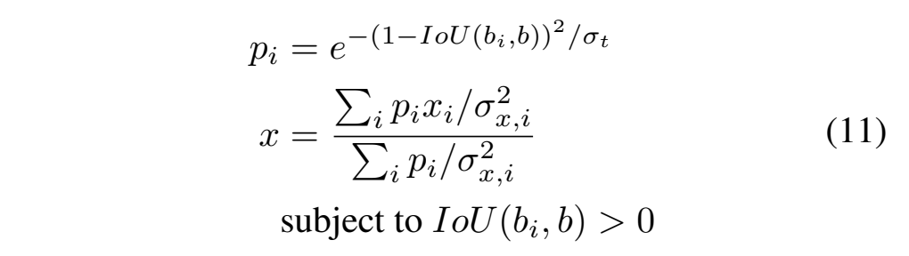
var-voting也可以和soft-nms一起使用，简单地插入其中即可：
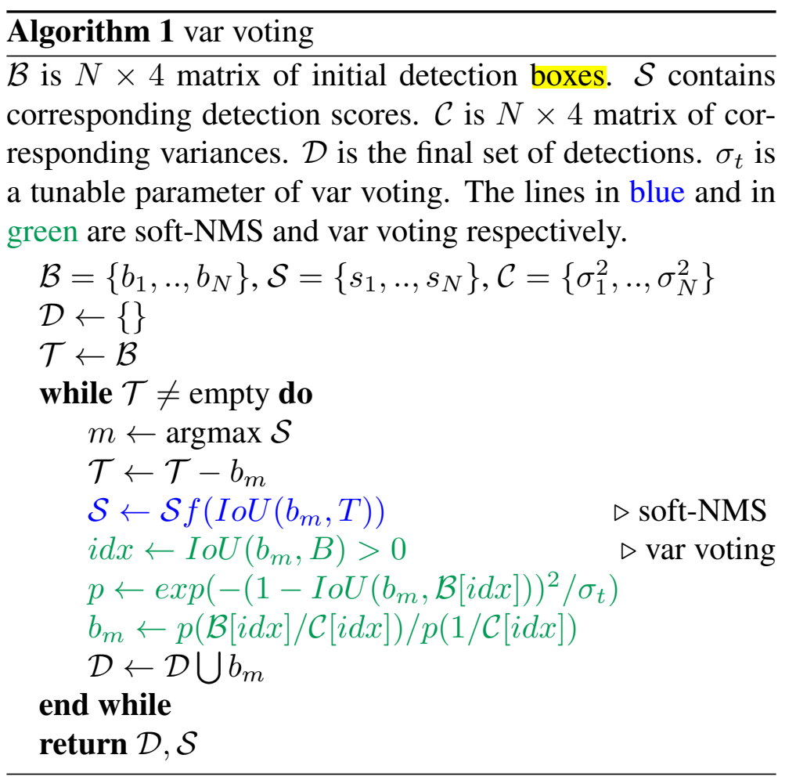
这里面的, , 都是预测的输出，则是一个可以用来调优的超参。
通过这样的加权方式，在voting中两种bbox的权重会被降低：
- 方差更大的框
- IoU与选中框更小的框
体现分类置信度的并不参与到voting中，因为分类score较低的框可能会有更高的定位置信度。这一点作者以intro中的那张figure 2作为说明。
Softer NMS
这里再提一下老版的softer nms Softer-NMS: Rethinking Bounding Box Regression ；其实和var voting的区别只是在于没有利用预测的variance，只利用了IoU大小作为加权，而且还用到了IoU阈值：
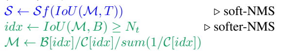
Experiments
消融实验on MS-COCO，baseline为VGG16， Faster RCNN：
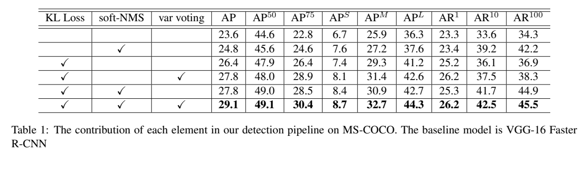
比较inference latency：
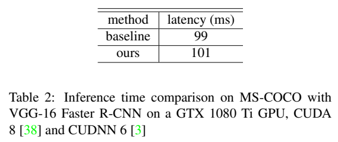
不同的fast RCNN head：
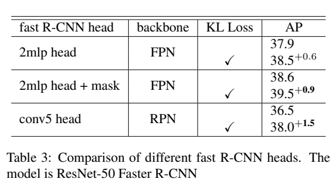
实验中调优的
Accurate Object Detection：
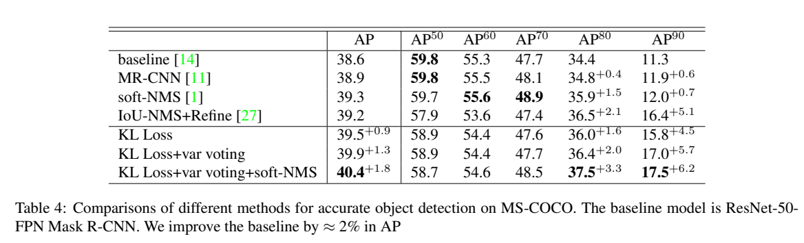
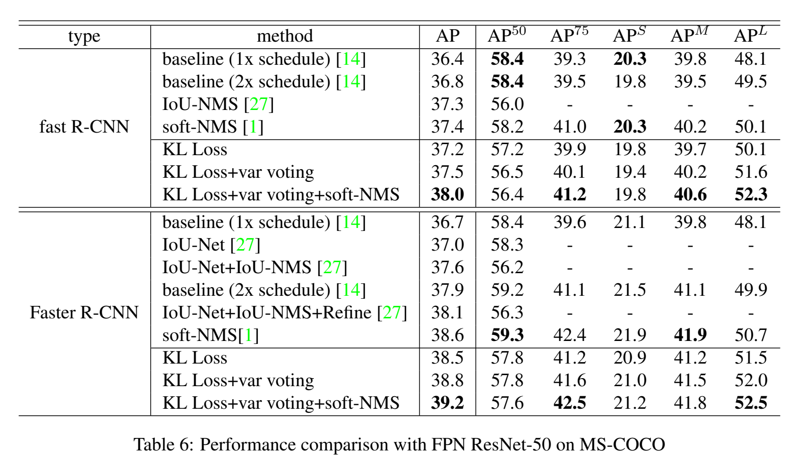
为了证明在小数据集上也有好的表现，PASCAL VOC 2007：
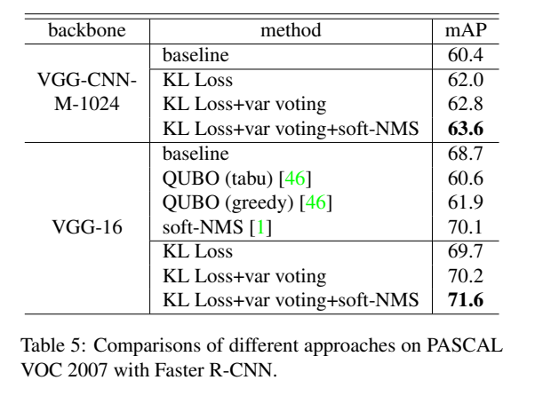